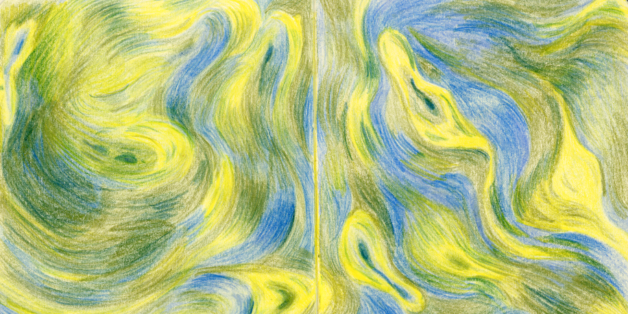
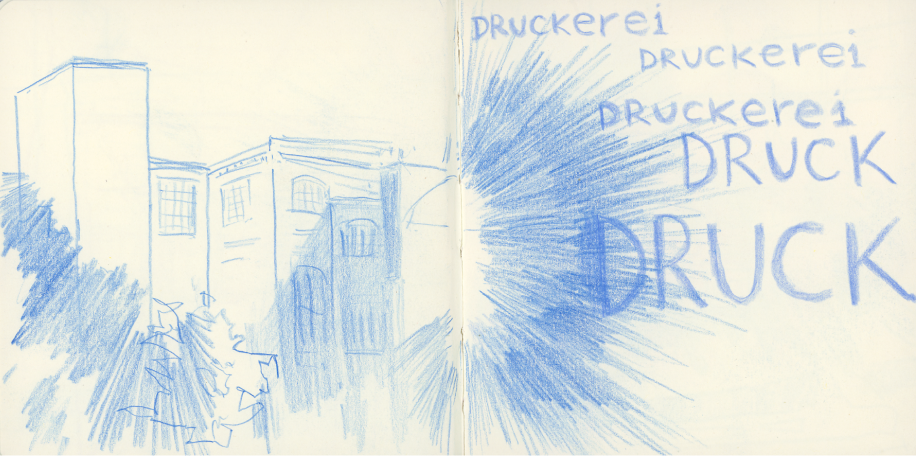
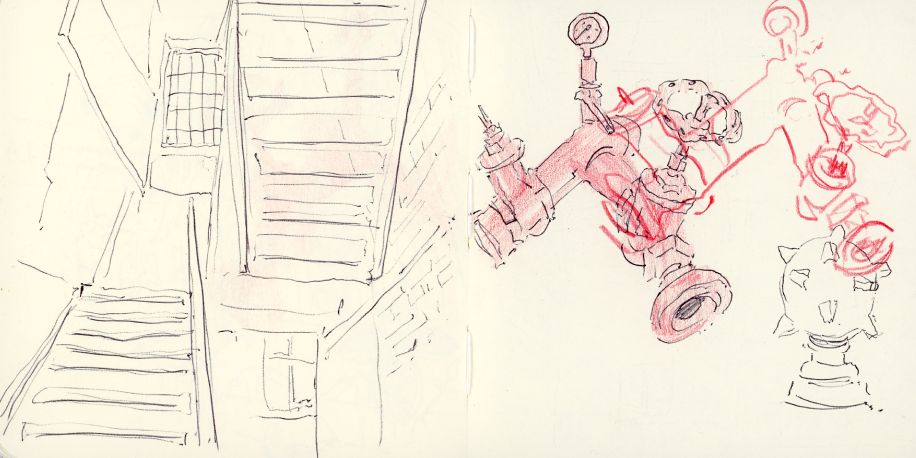
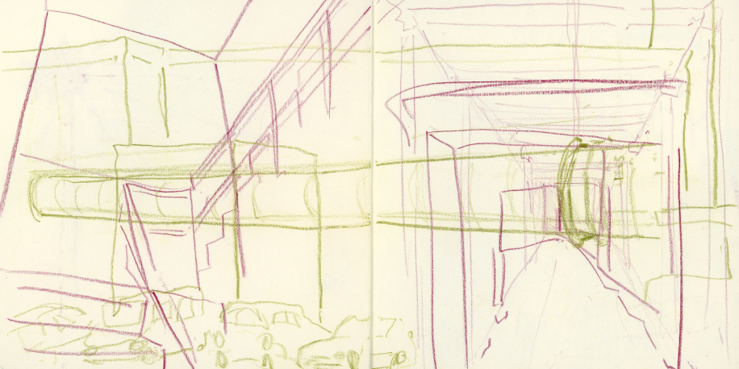
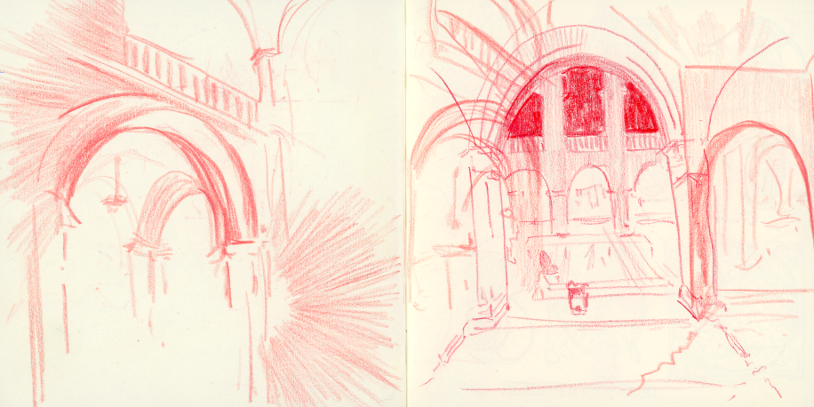
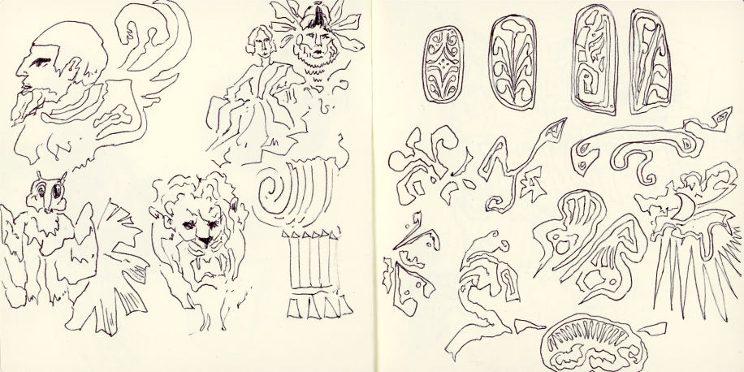
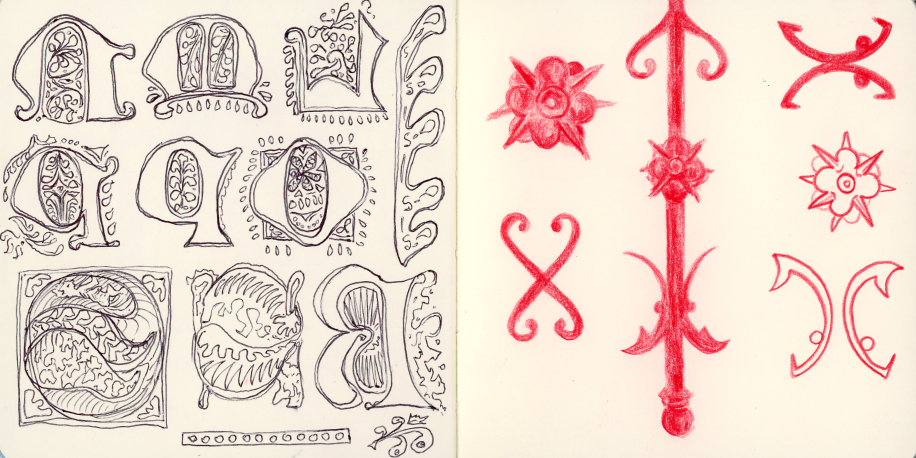
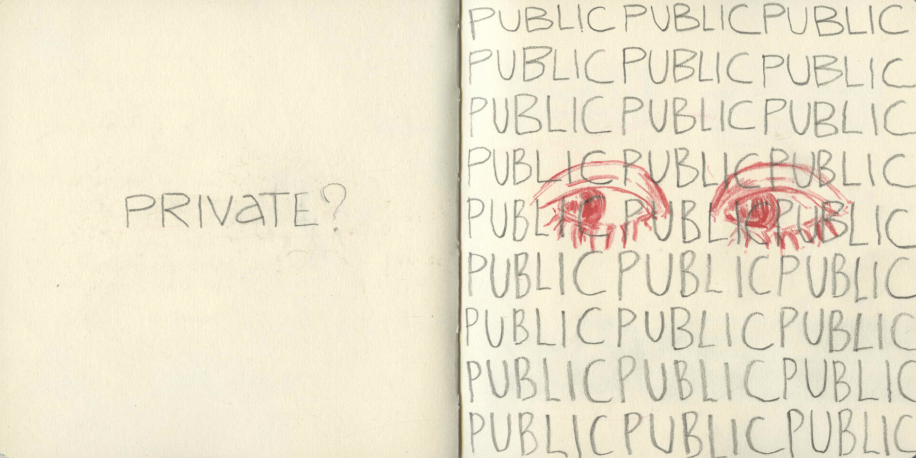
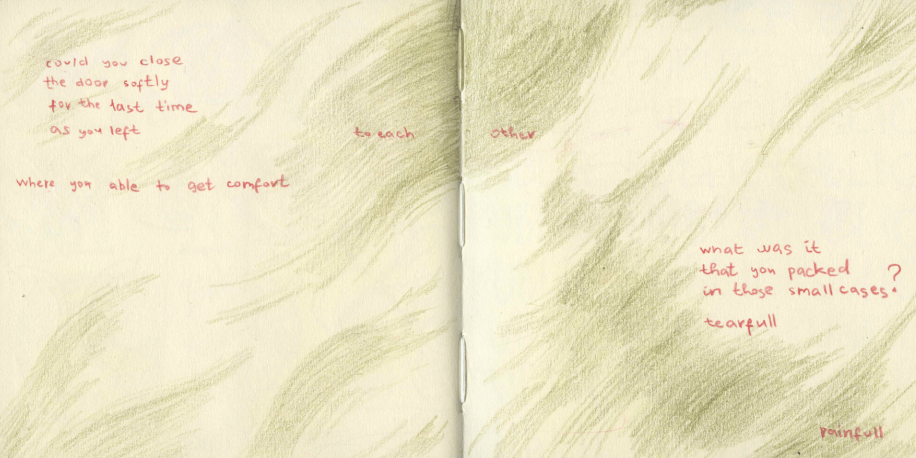
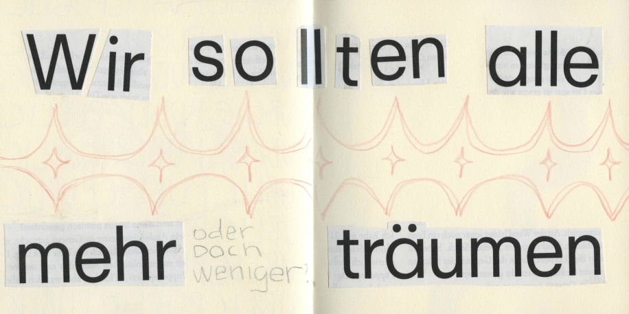

A beautiful city that now has a special place in my heart, full of interesting places, people, and events.
I only wish I had brought my camera to capture the city more fully.
But here are some pics from my phone gallery that I found interesting. We visited lots of places such as the Museum of Fine Arts, the Gallery of Contemporary Art, a printing house, The Leipziger Baumwollspinnerei, and other exhibitions and activities that I really enjoyed and gained inspiration from.
Sketches archive
Here are my most successful works, in my opinion.
I had so much fun using colored pencils, and I might even say they are my new favorite medium.
I focused on colors, perspective, and details.
These sketches I made inspired by The Leipziger Baumwollspinnerei.
Which once was a vast cotton mill, is now a vibrant cultural center with artist studios, galleries,
and printing rooms. I really liked the concept and think it is great that such a huge territory has
been transformed into a hub for creativity and art.

"Paint Paint Paint"

"Druck?""Beauty of Toxins"

"Random"

"Layers of Perspectives"
We visited the Leipzig Academy of Fine Arts (HGB).
The first sketch in this row is inspired by that visit.
It's a beautiful old building with arches and ladders that caught my eye, and
I wanted to capture them in my collection. The same goes for those small,
slightly Gothic ornaments, which are actually stamps
I saw at the last Museum of Books and Writing.
Oh, and those red figures? They're actually part of a fence that caught my eye with their charming fragility,
combined with a hint of Gothic character.

"Lost in the Arches"

"What Do U Think That Is?"

"Details"
The sketch in the middle refers to a video project titled "Too Heavy to Carry" by Elisabeth Stieglitz and Ronny Aviram. This work is based on the poem "Did You Close the Door Softly?" by Holocaust survivor Ruth Lansley. Writing down those words felt like a reflective task for me because it reminded me of a time when I left my home, unsure if I would ever be able to return. Life seemed to freeze within those walls the moment my family and I closed the door.

"Private?"

"Did You Close The Door Softly?"

"Träume"